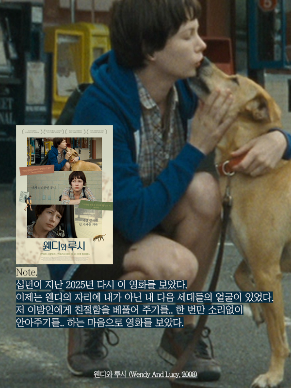
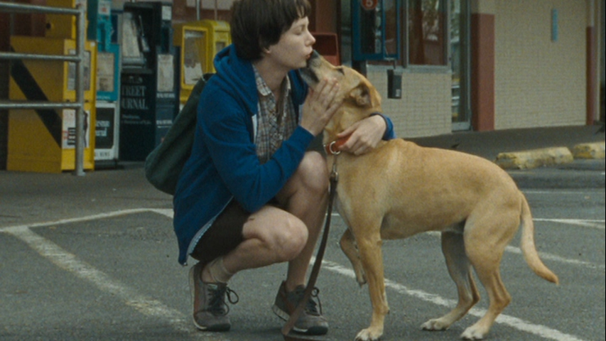
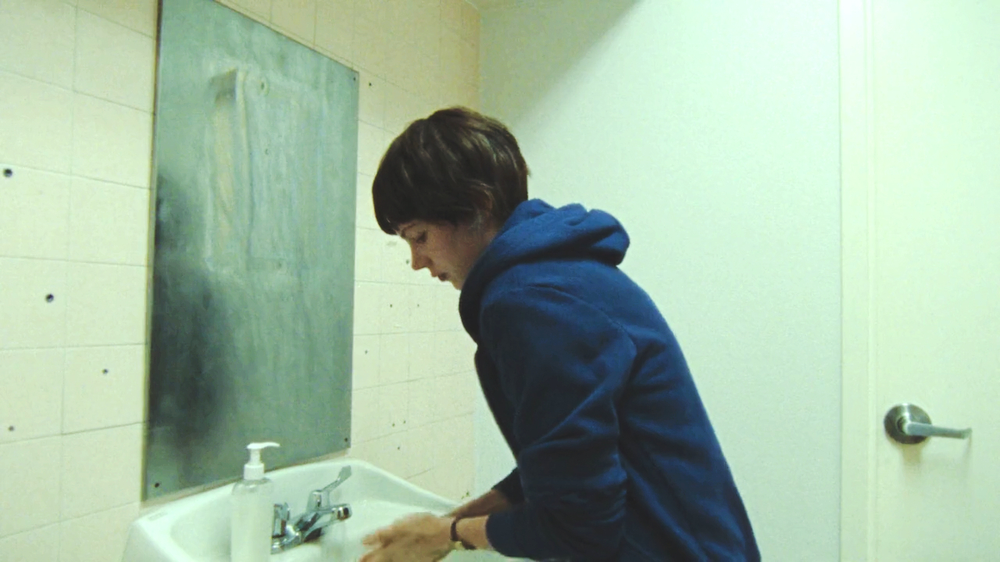
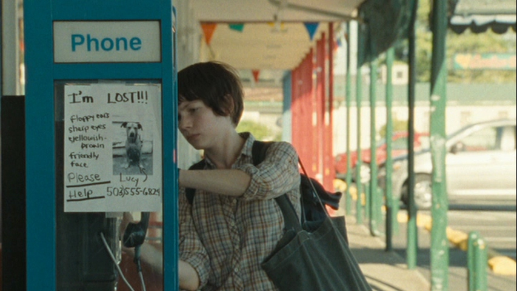
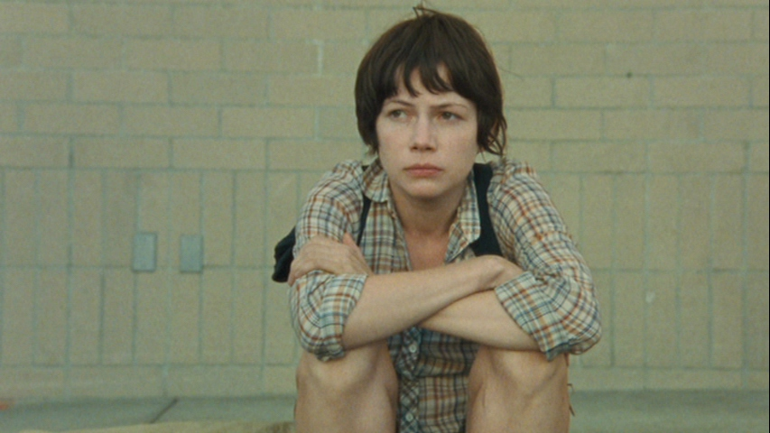
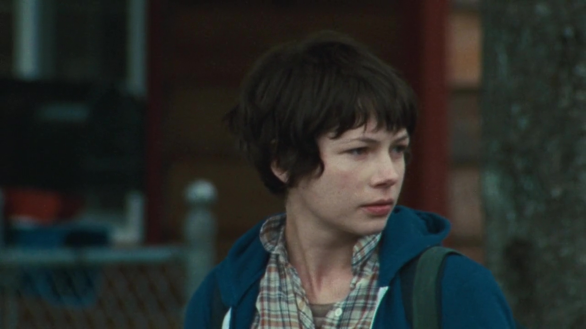
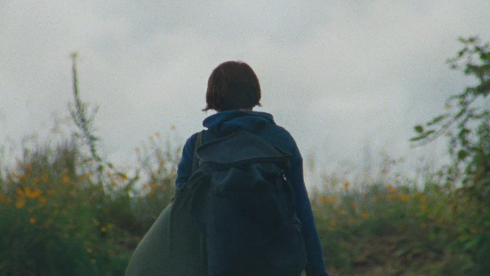
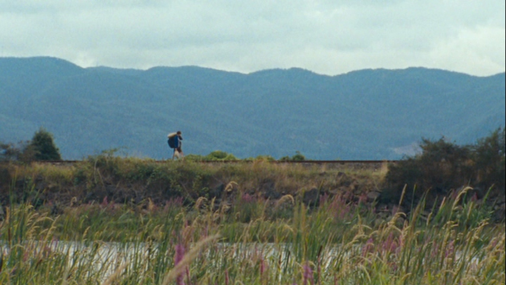

웬디와 루시, Wendy And Lucy
2008 | 드라마 | 감독 켈리 레이카트 | 촬영 | 샘 레비 | 출연 미셸 윌리엄스, 루시
★★★★

NOTE
스물 다섯, 이 영화를 처음 보았다. 그때의 나는 취업을 목적으로 부산을 떠나 서울로 독립한 상태였고, 아르바이트로 버는 한 달 수입은 생활하는 데 턱없이 모자라 근무지에서 나눠주는 빵과 우유로 하루를 버티는 날이 많았다. 그러한 상황에서, 노숙과 굶주림으로 추락하는 걸 무력하게 지켜볼 수 밖에 없는 <웬디와 루시>를 보았으니 생각만으로도 가슴 한 편이 저릴 수 밖에. 십년이 지난 2025년 다시 이 영화를 보았다. 이제는 웬디의 자리에 내가 아닌 내 다음 세대들의 얼굴이 투영되었다. 저 이방인에게 친절함을 베풀어 주기를.. 한 번만 소리없이 안아주기를.. 하는 마음으로 영화를 다 보았다.
Quote
Q : 켈리, 이 프로젝트가 어떻게 시작되었는지, 이야기의 씨앗이 어떻게 생겨났는지 말씀해 주실 수 있을까요?
Kelly : “이야기의 출발점은 사실 허리케인 카트리나 직후였어요.
사람들이 왜 애초에 자신의 삶을 그렇게까지 위태로운 상태로 내몰게 되는지에 대해 이야기하는 걸 계속 듣게 됐죠. 그리고 그때 미국 사회 전반에 흐르던 분위기가 있었어요. 가난이라는 것이 더 이상 무시하고 지나칠 수 있는 문제가 아니라는 감각이요. 그 가난을 향한 일종의 경멸 같은 것도 분명히 존재했고요. 그래서 존(레이먼드)과 저는 이런 질문을 하게 됐어요. 만약 중산층에 발을 걸칠 틈조차 없다면, 심지어 그걸 목표로 삼아 애쓰는 단계에도 이르지 못했다면, 도대체 어떻게 삶을 조금이라도 나아지게 할 수 있을까? 안전망도 없고, 지지해줄 사람도 없고, 신탁기금도 없고, 좋은 교육을 받은 적도 없다면, 그런데도 그럴 의지와 기운은 있다면, 그런 사람은 어떻게 다음 단계로 나아갈 수 있을까? 도대체 그게 가능한 일일까? “ - 2008년, 뉴욕 링컨 센터 인터뷰 중에서
Synopsis
웬디(미셸 윌리엄스)는 일자리를 구하기 위해서 반려견 루시와 함께 알래스카로 향하고 있다. 이동하는 도중 자동차 고장으로 오리건주의 한 마을에 발이 묶이게 되고, 루시의 사료도 사야하고 자동차도 고쳐야 하는 시점에서 점점 줄어드는 돈이 걱정이다. 식료품 가게에 들어가 물건을 훔쳐 나오다가 직원에게 붙잡힌 웬디는 반나절정도 경찰서에 머무르게 되고, 그 사이 루시가 사라진다. 사방 팔방 찾아보아도, 동물 보호소에도 없는 루시. 절망적인 며칠이 지나고, 동물보호소로부터 루시가 어느 가정에서 임시보호중이라는 연락을 받게 된다. 기쁜 마음도 잠시, 자동차가 더이상 굴러갈 수 없다는 말을 듣고 다시 무너지는 웬디. 그녀는 루시가 있는 곳으로 가지만, 알래스카로 가는 기차에 혼자 오르게 된다.








